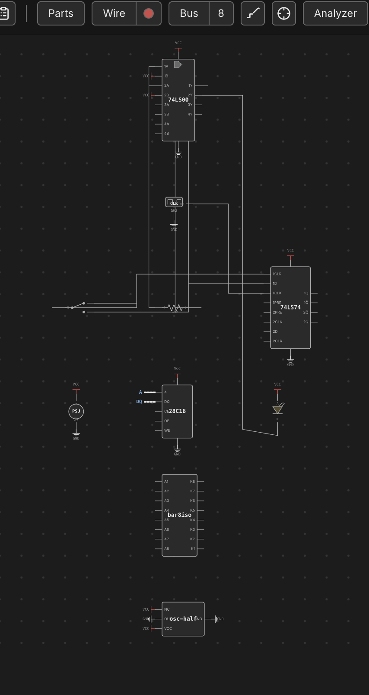

Schematic View
The desk shows your circuit exactly as you built it — a physical breadboard with chips seated in holes and wires running point to point. The schematic view shows the same circuit the way an engineer would draw it: chip symbols, named nets, and bus lines, laid out automatically. It's a projection, not a second document — the breadboard is still the single source of truth, and nothing you do in the schematic changes a hole, a pin, or a wire on the desk.

Switching views
Press Tab to flip between the Breadboard and Schematic views (not
while a text field has focus — typing a Tab there behaves normally, e.g.
to move between fields). The schematic reuses the desk's own camera, so
pan and zoom feel identical in both views and your position is preserved
when you switch back. The first time you open the schematic in a session it
automatically fits the whole diagram in the viewport; after that, panning
and zooming are exactly what you left them.
If the desk has no chips on it yet, the schematic shows a short hint instead of an empty canvas — add a chip on the breadboard and switch back to see it appear.
Chip symbols & routed nets
Every chip is drawn as a labelled box (or, for a plain gate chip, a small distinctive shape — AND/OR/NAND/NOR/XOR/NOT/BUFFER — badged at the top of the box) with named pin stubs instead of physical DIP pins. Discretes get their own recognizable symbols too: an LED's diode triangle, a resistor body, a switch, a push button, a PSU or clock source block. VCC and GND pins don't route across the page like a signal would — each one drops a small power-rail symbol right at the pin, the way a real schematic keeps power off the signal routing.
Everything else is connected by routed nets: orthogonal lines that run chip-to-chip along the net they belong to, labeled with the net's name where there's room. A group of pins wired as a bus (see Wiring, Nets & Buses) collapses into a single fat bus line instead of drawing every bit as its own wire — the same visual shorthand a hand-drawn schematic uses for a data or address bus.
Auto-layout & nudging
The schematic lays itself out automatically and deterministically: the same circuit always produces the same diagram, with chips arranged left-to-right roughly along the direction signals flow and edges routed to keep crossings down. You never have to arrange it by hand — but if a particular symbol lands somewhere inconsistent, drag it to a better spot. That drag is stored as a per-symbol position hint, not a real coordinate: it only ever affects where that symbol sits on THIS derived diagram, and it has no effect on the component's actual place on the breadboard. Nets simply re-route to follow wherever you drop it.
An Auto-layout button in the schematic clears every position hint at once and lets the algorithm re-place everything from scratch — useful after nudging things into a mess, or after a big edit has made your old arrangement stale.
Live simulation tint
Press Run and the schematic lights up exactly like the breadboard does: the routed lines tint by their net's live level, an LED symbol lights when its anode reads high and its cathode reads low, and a chip symbol picks up the same health badge (unpowered / underpowered / reversed / damaged) you'd see on its physical package. Both views are driven from the same simulation state, so whichever one you're looking at when you hit Run shows the identical picture — there's nothing to keep in sync by hand. See Running a Simulation for what each level color and health badge means.
The probe is shared
The connectivity probe (see Probing & Net Names) is armed and driven from the breadboard, but its highlight is not confined to it: probing a net on the desk highlights that same net in the schematic too — by its stable net id, not by screen position — so you can hover a wire on the physical board and immediately see which chip symbols and bus lines it corresponds to in the logical diagram. The highlight is applied to both views at once, whichever one happens to be visible, so switching to the schematic after probing shows the net already picked out. It's the same underlying net, just drawn two different ways.
See also: The Desk & Breadboards for the physical view this diagram is derived from, and Wiring, Nets & Buses for how wires and buses become the nets the schematic routes.